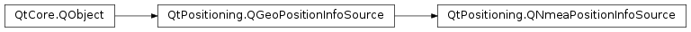

QNmeaPositionInfoSource¶
Synopsis¶
Functions¶
- def
device() - def
setDevice(source) - def
setUserEquivalentRangeError(uere) - def
updateMode() - def
userEquivalentRangeError()
Virtual functions¶
- def
parsePosInfoFromNmeaData(data, size, posInfo, hasFix)
Detailed Description¶
The
PySide2.QtPositioning.QNmeaPositionInfoSourceclass provides positional information using a NMEA data source.NMEA is a commonly used protocol for the specification of one’s global position at a certain point in time. The
PySide2.QtPositioning.QNmeaPositionInfoSourceclass reads NMEA data and uses it to provide positional data in the form ofPySide2.QtPositioning.QGeoPositionInfoobjects.A
PySide2.QtPositioning.QNmeaPositionInfoSourceinstance operates in eitherRealTimeModeorSimulationMode. These modes allow NMEA data to be read from either a live source of positional data, or replayed for simulation purposes from previously recorded NMEA data.The source of NMEA data is set with
PySide2.QtPositioning.QNmeaPositionInfoSource.setDevice().Use
PySide2.QtPositioning.QNmeaPositionInfoSource.startUpdates()to start receiving regular position updates andPySide2.QtPositioning.QNmeaPositionInfoSource.stopUpdates()to stop these updates. If you only require updates occasionally, you can callPySide2.QtPositioning.QNmeaPositionInfoSource.requestUpdate()to request a single update.In both cases the position information is received via the
PySide2.QtPositioning.QGeoPositionInfoSource.positionUpdated()signal and the last known position can be accessed withPySide2.QtPositioning.QNmeaPositionInfoSource.lastKnownPosition().
PySide2.QtPositioning.QNmeaPositionInfoSourcesupports reporting the accuracy of the horizontal and vertical position. To enable position accuracy reporting an estimate of the User Equivalent Range Error associated with the NMEA source must be set withPySide2.QtPositioning.QNmeaPositionInfoSource.setUserEquivalentRangeError().
-
class
PySide2.QtPositioning.QNmeaPositionInfoSource(updateMode[, parent=nullptr])¶ Parameters: - updateMode –
PySide2.QtPositioning.QNmeaPositionInfoSource.UpdateMode - parent –
PySide2.QtCore.QObject
Constructs a
PySide2.QtPositioning.QNmeaPositionInfoSourceinstance with the givenparentandupdateMode.- updateMode –
-
PySide2.QtPositioning.QNmeaPositionInfoSource.UpdateMode¶ Defines the available update modes.
Constant Description QNmeaPositionInfoSource.RealTimeMode Positional data is read and distributed from the data source as it becomes available. Use this mode if you are using a live source of positional data (for example, a GPS hardware device). QNmeaPositionInfoSource.SimulationMode The data and time information in the NMEA source data is used to provide positional updates at the rate at which the data was originally recorded. Use this mode if the data source contains previously recorded NMEA data and you want to replay the data for simulation purposes.
-
PySide2.QtPositioning.QNmeaPositionInfoSource.device()¶ Return type: PySide2.QtCore.QIODeviceReturns the NMEA data source.
-
PySide2.QtPositioning.QNmeaPositionInfoSource.parsePosInfoFromNmeaData(data, size, posInfo, hasFix)¶ Parameters: - data – str
- size –
PySide2.QtCore.int - posInfo –
PySide2.QtPositioning.QGeoPositionInfo - hasFix –
PySide2.QtCore.bool
Return type: PySide2.QtCore.boolParses an NMEA sentence string into a
PySide2.QtPositioning.QGeoPositionInfo.The default implementation will parse standard NMEA sentences. This method should be reimplemented in a subclass whenever the need to deal with non-standard NMEA sentences arises.
The parser reads
sizebytes fromdataand uses that information to setupposInfoandhasFix. IfhasFixis set to false thenposInfomay contain only the time or the date and the time.Returns true if the sentence was succsesfully parsed, otherwise returns false and should not modifiy
posInfoorhasFix.
-
PySide2.QtPositioning.QNmeaPositionInfoSource.setDevice(source)¶ Parameters: source – PySide2.QtCore.QIODeviceSets the NMEA data source to
device. If the device is not open, it will be opened inQIODevice.ReadOnlymode.The source device can only be set once and must be set before calling
PySide2.QtPositioning.QNmeaPositionInfoSource.startUpdates()orPySide2.QtPositioning.QNmeaPositionInfoSource.requestUpdate().Note
The
devicemust emitQIODevice.readyRead()for the source to be notified when data is available for reading.PySide2.QtPositioning.QNmeaPositionInfoSourcedoes not assume the ownership of the device, and hence does not deallocate it upon destruction.
-
PySide2.QtPositioning.QNmeaPositionInfoSource.setUserEquivalentRangeError(uere)¶ Parameters: uere – PySide2.QtCore.doubleSets the User Equivalent Range Error (UERE) to
uere. The UERE is used in calculating an estimate of the accuracy of the position information reported by the position info source. The UERE should be set to a value appropriate for the GPS device which generated the NMEA stream.The true UERE value is calculated from multiple error sources including errors introduced by the satellites and signal propogation delays through the atmosphere as well as errors introduced by the receiving GPS equipment. For details on GPS accuracy see http://edu-observatory.org/gps/gps_accuracy.html.
A typical value for UERE is approximately 5.1.
-
PySide2.QtPositioning.QNmeaPositionInfoSource.updateMode()¶ Return type: PySide2.QtPositioning.QNmeaPositionInfoSource.UpdateModeReturns the update mode.
-
PySide2.QtPositioning.QNmeaPositionInfoSource.userEquivalentRangeError()¶ Return type: PySide2.QtCore.doubleReturns the current User Equivalent Range Error (UERE). The UERE is used in calculating an estimate of the accuracy of the position information reported by the position info source. The default value is NaN which means no accuracy information will be provided.
© 2018 The Qt Company Ltd. Documentation contributions included herein are the copyrights of their respective owners. The documentation provided herein is licensed under the terms of the GNU Free Documentation License version 1.3 as published by the Free Software Foundation. Qt and respective logos are trademarks of The Qt Company Ltd. in Finland and/or other countries worldwide. All other trademarks are property of their respective owners.